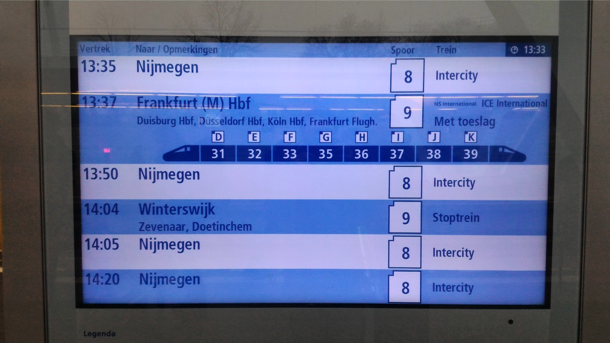
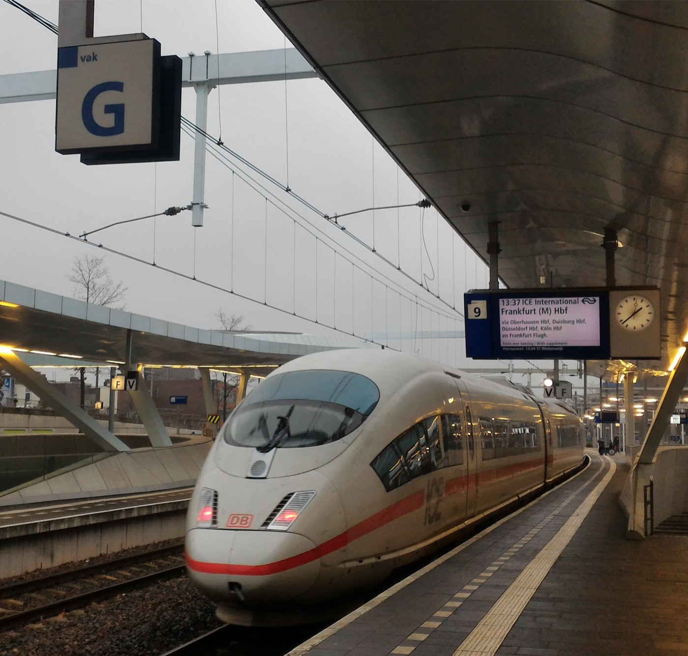
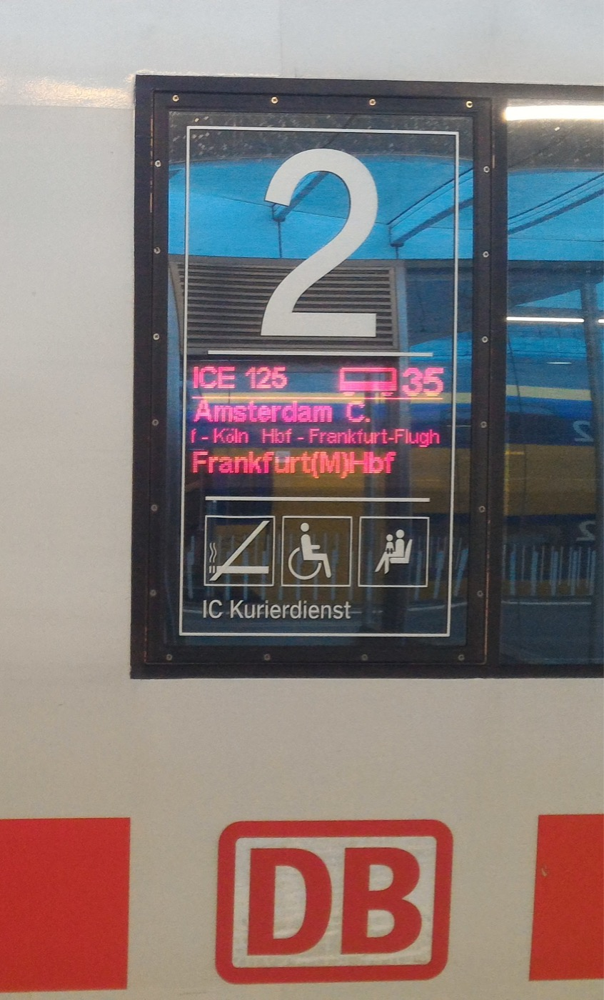
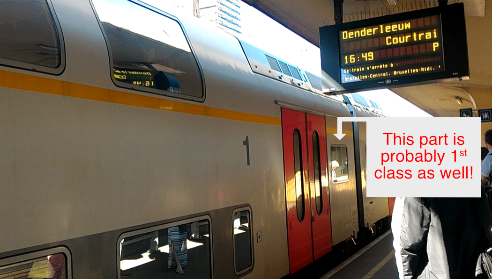
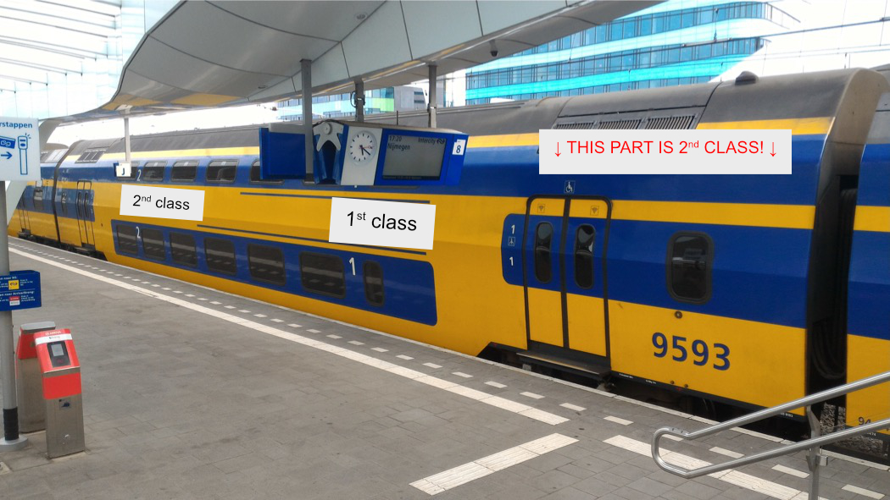
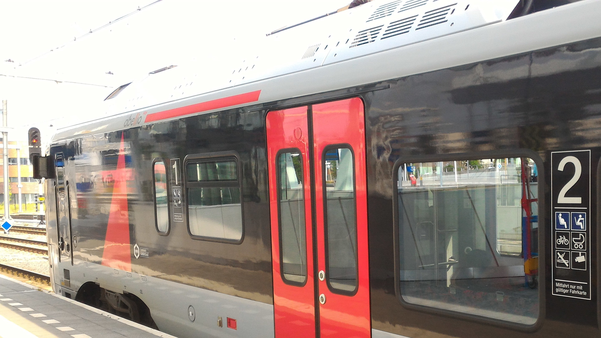

Greetings! Here are some tips on train travel in/to/from/through Benelux. Belgium opened the first steam passenger railway in Continental Europe in 1835, followed by the Netherlands in 1839, and Luxembourg in 1845. The three countries have well developed railway networks, connecting the vast majority of towns and cities. Within Benelux, rail is the fastest – and certainly the most convenient – way to travel between many larger cities.
Included in this page are tips on train travel in Benelux in general, and also some tips on neighbouring France and Germany. There are also separate pages for country-specific tips on the Netherlands, Belgium, and Luxembourg, which can be accessed via the menu buttons. Below are network maps I have drawn for the regular passenger train services in Benelux in 2020. Due to the complexity of the networks, especially that of Belgium, I have opted to present them in ten separate maps instead of one. The last map is an overview map. (Click on the thumbnails to open the pdf's.)
InterCity, high-speed rail, and other long-distance rail network in Benelux:
These are the timetable spreadsheets for the high-speed rail services in/to/from/through Benelux in 2020 that I have compiled. (I cannot guarentee their accuracy! Click on the tabs for the various sheets. Timetabling for high-speed rail services is often very irregular, and they often change every few months; always check their websites for the latest information.)
Here are videos of the types of passenger rail services in Benelux that I took in 2018:
The 'domestic' sites are for train travels within their respective countries, and the 'international' sites are for international train travels. There are multiple railway companies running domestic train services in the Netherlands and Luxembourg; the domestic sites of NS and CFL can handle any regular train journeys within their countries, even on services not run by them. With international train travels, different companies can give different prices for the same international journey, so it is worth checking the booking websites of the various countries. For international journeys that involve train changes, it is worth comparing the price of making one booking for the entire journey, versus dividing the journey into various bookings.
Do I have to book early for the best price?
Yes, dynamic pricing, on basically all high-speed rail services, IC/EC in Germany, and Intercités in France (ticket price for immediate deparature can range from very expensive to still quite cheap, depending on demand):
Eurostar: high-speed England – France – Belgium – Netherlands; England – France.
Thalys: high-speed France – Belgium – Netherlands / Germany.
IZY: low-cost Paris – Brussels, half on high-speed rail, half on conventional rail.
TGV: high-speed Brussels – France (not central Paris), Luxembourg – France, France domestic, etc.
Intercités: non-high-speed long-distance France domestic.
ICE (high-speed), IC or EC (non-high-speed) in/from/to/through Germany (the umbrella term for these in German is Fernverkehr 'long-distance traffic').
Flixtrain: low-cost long-distance Germany domestic. (Private company; operated by Flixbus.)
Yes, fixed discount prices, limited supply:
The P'tits Prix tickets by TER Grand Est. There seems to be very few of them.
Yes-ish, fixed discounted prices that disappear some days before departure:
The Prix Cassés tickets by TER Hauts de France. It seems to be available and unlimited for departures five or more days from the date of purchase. (Applicable to TER services, including TGVAUT; not applicable to TERGV services.)
The Early-Bird discount: for non-high-speed rail travel (including Intercity direct) between the Netherlands and Belgium, or between the Netherlands and Luxembourg via Belgium, fixed discount available 7 or more days before departure, about 40% off for Mon–Thurs departures, 20% off for Fri–Sun departures. In practical terms, with NS and NMBS/SNCB, this is an internet-only fare; other channels of purchase either do not provide discounted tickets, or charge hefty booking fees.
Eurostar from Brussels-Midi/Zuid to Lille Europe or Calais Fréthun (in this direction only): must be booked two or more days before departure, and can only be booked through the NMBS/SNCB International or Belgian Eurostar website/app. (For Lille, TGV is more flexible anyway, and often cheaper. Also check NMBS/SNCB International and the SNCF websites for prices to Calais.)
No, no discount for early booking in other cases:
Catching the ICE within the Netherlands: domestic ticketing plus a surchage of €2.6, for most people.
Catching the ICE within Belgium: domestic ticketing plus a surcharge of €8 second class, €12 first class.
TERGV in far northern France: TGV on TER (regional) ticketing. See below.
Catching Intercity direct (ICd) within the Netherlands: domestic ticketing plus a surcharge of €2.6 for the Schiphol Airport – Rotterdam Centraal high-speed line.
Slower trains:
InterCity within the Netherlands
Local trains in the Netherlands: Sneltrein/RE, Stoptrein/Sprinter/RS, including extensions to Germany.
InterCity run by NMBS/SNCB: in Belgium and Luxembourg, between Belgium and Lille Flandres / Aulnoye Aymeries / Maubeuge in France. (These are classed as TER in France.)
Other trains in Belgium: ICT, P, S / L, including extensions to Roosendaal, Maastricht (the Netherlands), Aachen (Germany), and Luxembourg.
Local trains in Luxembourg: RE, RB, including extensions to Belgium, France, and Germany.
IRE, RE, RB, S-bahn in Germany (the umbrella term for these in German is Nahverkehr 'near traffic', i.e. local/regional trains). Including their extentions to the Netherlands.
TER / Transilien in France, including TER to/from Luxembourg. (TER = regional trains; Transilien = regional trains in Île-de-France/ around Paris.)
Also note that InterCity in Benelux has the same pricing as local trains. (This is unlike Germany and France, where Intercities have dynamic pricing like high-speed trains.)
In Benelux, other than the ICE and ICd surcharges mentioned above, the only other surcharge is the Diabolo fee: station access fee for Brussels Airport-Zaventem station. (See the surcharges section in the Netherlands and Belgium pages.)
Seats on high-speed trains are sometimes overbooked to a small degree. However, unlike air tickets, they tell you that you're sold an overbooked ticket before you make the payment. If you agree to it and pay, your ticket has an assigned carriage, but not a seat number. Contact the train manager when you board the train: if someone in your carriage fails to turn up, you may be assigned their seat; if there are no empty seats, you sit on a folding seat / jump seat / some seat in the vestibule.
For non-high-speed rail services, the price of a return ticket is usually just the sum of the one-way journeys involved, except for a few international return deals from Belgium or Luxembourg, and Luxembourg's time-based domestic tickets. (Domestic public transport in Luxembourg becomes free from 1 March 2020 onwards! Except for first-class travel on trains.) For high-speed rail services, sometimes there are special return deals.
See the pages on the individual countries for more details.
Do I have to make a seat reservation? / Do I have to catch a specific train?
Compulsory seat reservation: Eurostar, Thalys, TGV, long-distance and night Intercités in France (see the map in the Intercités page: light green lines and hollow lines respectively). You have to catch the specific train(s) as stated on the ticket.
Compulsory seat assignment: IZY, OUIGO. (They assign you a seat; you have no choice.) You have to catch the specific train as stated on the ticket.
Optional seat reservation: ICE/IC/EC in/to/from/through Germany; seat reservation is optional in second class, included in first class. With Sparpreis tickets, you have to catch the particular ICE/IC/EC trains or IC bus as stated in the ticket; with Flexpreis tickets, you are not restricted to specific trains. (See also below.)
If you are catching a high-speed train between France and Germany, check carefully if seat reservation is included or not.
Some Flixtrains have optional seat reservations. This can be done through their website or ticket offices, but not through their app or check-in staff.
Some have seat assignment included, some have no reservation possible: short distance Intercités in France (see the map in the Intercités page: dark green lines). You have to catch the specific train(s) as stated in the ticket, if you purchase cheaper-price tickets.
You must catch a specific train, no seat reservation: P'tit prix tickets by TER Grand-Est.
No seat reservation possible: other trains, including Intercity direct between the Netherlands and Belgium, and local train services. You can use the ticket on any service(s) along the designated route (for a single/return journey) within the date of validity printed on the ticket. (Belgium and Luxembourg: operational day; The Netherlands: departure time before 04:00 the following day.)
If you are restricted to a specific train service, the date and the train number of that service is printed on the ticket. If you have a reservation, the carriage number and the seat number are printed on the ticket. (In Dutch/French/German, carriage/coach is Rijtuig / Voiture / Wagen, and seat is Zitplaats / Place assise / Platz. Sometimes abbreviations of these are used.)
At the platform, there are electronic or paper displays informing the passengers which carriage/coach will arrive at which section of the platform. Get there before the train arrives.
Electronic display at platform 8/9, informing passengers that for the 13:37 ICE train to Frankfurt (Main) Hbf, carriages 31 to 39 correspond with sections D to K at platform 9 Standing at vak G at platform 9... The electronic display next to the door of this carriage indicates that this is carriage 35, the train number of this service is ICE 125, and it goes from Amsterdam C. to Frankfurt(M)Hbf
Do I have to validate my ticket?
The Netherlands, e-tickets/ international tickets with barcodes: no, they have a date on them. (At stations with closed gates, there is at least one gate that can read barcodes and let you pass through.)
The Netherlands, OV-chipkaart: you have to check these disposable or plastic NFC cards (contactless cards) in and out at the card-readers at the stations (or on buses/trams/ferries).
Belgium, e-tickets/ normal paper tickets: no, they have a date and barcode on them. Only Brussels Airport-Zaventem station has gates, and their gates can read barcodes (and also the RFID tickets sold on trains).
Belgium, rail-pass-type fill-in-the-blank tickets: you have to fill in your travel details with a pen before you board a train. (For the Brussels Airport-Zaventem station access fee, you have to pay for that separately through other means.)
Luxembourg, e-tickets/ SMS tickets: no, they have time and date on them.
Luxembourg, mKaart: you have to validate tickets stored in these plastic RFID cards (contactless cards) at card-readers at train stations (or on buses/trams).
France: machine-issued or counter-issued tickets usually have the line BILLET à composter avant l'accès au train on it; you have to put the ticket into a validation machine (usually yellow in colour) to have it time-stamped before boarding a train. Validation is not required for e-tickets which already has a date on it.
Germany: Not for the usual DB train tickets; they have a date on them. Some tickets require you to write the names of the travellers on the ticket. For some local public transport tickets, if the ticket needs validation, it says something like Bitte entwerten 'please validate' or Hier entwerten 'validate here', in which case you put the ticket into a time-stamping validation machine.
The very basics of buying tickets
Luxembourg has a time-based fare structure for domestic travel, allowing unlimted changes in all directions within the time limit. (Domestic public transport in Luxembourg becomes free from 1 March 2020!)
Elsewhere, to buy a normal ticket, input journey details like the 'from' and 'to' stations, the date, single/return, and class of travel (first vs second class). In the vast majority of cases, there is no need to buy separate tickets if you need to change trains (of the same or different companies) for a 'direct' journey (usually the shortest or fastest route between two stations).
For domestic tickets in Belgium, there is no 'via' option. If you want to make a detour (i.e. not the most direct route), in most cases you have to buy two separate tickets. If you are travelling on the shortest route, you are allowed to break your journey. (See here.)
In the Netherlands, there is no longer the option of nominating a 'via' station, for both domestic and international tickets. For domestic tickets, if NS thinks that there is more than one reasonable route for your intended journey, and if there is a price difference, the website/app/machine/ticket staff shows you the price difference, and you have to choose one of the options. A third option is also offered, which is paying the higher price, and you have a ticket which allows you to travel on either route. Breaking of journey is allowed.
When getting international tickets from Dutch ticket machines, after inputting the 'from' and 'to' stations, it shows you a 'via' railway frontier point where you cross an international border. Pressing the 'via' button often gives you a list of alternative frontier points where you can cross the border, and the price for going via that frontier point is shown.
For international travel, the price for the entire journey in one ticket, versus splitting the journey into two or more tickets, can have different prices. For country pairs without direct train connections, except for Netherlands–Luxembourg, you might want to compare the price of the entire journey in one ticket (if that company can handle tickets for that journey), versus making separate bookings for each border crossing. For instance, for train travels between Benelux and the Czech Republic, you might want to check the price between Benelux and some point in Germany, and between that point in Germany and Czech Republic, versus the price of the entire way between Benelux and Czech Republic. (Check with, e.g., České dráhy, Deutsche Bahn, and the international sites of the national railway companies in Benelux.)
Budget train services have restricted sales channels. Tickets for IZY and Ouigo are offered at their respective websites, and the SNCF website, but not from, e.g., Thalys, NMBS/SNCB International. Flixtrain tickets are sold from their own website.
DB began selling Thalys tickets again in October 2018.
Special international deals
There are a number of international train deals. The range of deals offered by country A to country B is not necessarily the same as the range of deals offered by country B to country A.
The most important of these international deals are: a) the Early Bird deal for non-high-speed rail travel between the Netherlands and Belgium, or between the Netherlands and Luxembourg via Belgium: book seven or more days ahead online and get 40% discount for Monday to Thursday departures, and 20% discount for Friday to Sunday departures; and b) between Belgium and Luxembourg, the mid-flex weekend return deal (30% discount), and the no-flex Escapade 30-day return deal (€55/77/99 for 1/2/3 people second class between any station in Belgium and any station in Luxembourg).
Between the Netherlands and Luxembourg, going through Belgium is usually faster and cheaper. However, if you have to book tickets within six days, or you cannot get an e-ticket for any reason, it is also worth looking into going through Germany instead of Belgium. This is especially the case for Dutch cities like Enschede, Arnhem, and Venlo close to the German border. Even to/from Amsterdam, a low-flex ticket through Germany can be cheaper than a full-flex ticket through Belgium (if you, e.g., missed the Early Bird deal).
Read the individual country pages for more international train deals.
German ticketing
Germany runs many train services into Benelux, and German ticketing applies to German services that go within/to/from/through Germany. Tickets for journeys that involve only Nahverkehr 'nearby traffic', i.e. local/regional trains, have fixed pricing. S-bahn, RB, RE, and IRE are examples of Nahverkehr train categories. Tickets for journeys that involve Fernverkehr 'far traffic', i.e. long-distance trains, have dynamic pricing. IC, EC, ICE, ECE are examples of Fernverkehr train categories. (This is similar to France: TER/Transilien/TERGV have fixed pricing, Intercités/TGV have dynamic pricing.) Here I will talk about some notable Nahverkehr tickets first, and then some brief notes on Fernverkehr ticketing.
Nahverkehr day tickets
There are day tickets that are valid on basically all local trains throughout each German state (usually also covering other forms of local public transport), and ones that are valid throughout the entire Germany. The tickets for the states that border Benelux cover some public transport routes into Benelux. For the Niedersachsen-Ticket, Niedersachsen-Ticket plus Groningen, and SchönerTagTicket NRW, see the Germany section in the Netherlands page. For the Rheinland-Pflaz-Ticket + Lux, see the Germany section in the Luxembourg page. (There is relatively little interactions between Belgian and German local public transport systems. Basically the only place in Belgium where ordinary German tickets are valid is bus 24 between Kelmis and Aachen; see also the Germany section in the Belgium page.)
The Quer-durchs-Land-Ticket is a day ticket that is valid on basically all local trains (e.g. S/RB/RE/IRE) throughout Germany. It costs €44/€52/€60/€68/€76 for 1/2/3/4/5 people for unlimited travel for one day (Mon-Fri from 09:00, Sat-Sun from 00:00, till 03:00 the following day) on basically all local trains in Germany, plus very short sections in Austria, Switzerland, and Poland, but none in Benelux. All local passenger trains of the DB group are included. DB IC/EC trains along two trajectories are also included: in the north (quite close to the Netherlands) Norddeich Mole/Emden Außenhafen – Bremen Hbf, and in the south Stuttgart Hbf – Konstanz Hbf. Dutch Arriva trains within Germany are included. Luxembourgish trains are included between the Igel frontier and Trier Hbf. From what I can see in the validity list, all German S-bahns are included, but only some Austrian and Swiss S-bahn lines in Germany are included. Check the validity list pdf in the German page very carefully. Unlike the state-level tickets, U-bahn/buses/trams etc. are not included in the Quer-durchs-Land-Ticket.
The Schönes-Wochenende-Ticket (a better version of the Quer-durchs-Land-Ticket for the weekend) has been withdrawn in Summer 2019.
Long distance ticketing offers three levels of flexibility (since August 2018): Super Sparpreis 'Super saver fare', Sparpreis 'Saver fare', and Flexpreis 'Flexible fare'. (Elsewhere in these pages, when Sparpreis-versus-Flexpreis is discussed, Sparpreis includes Super Sparpreis, unless further qualified.) Super Sparpreis is the cheapest, but it runs out the quickest, and offers no flexibility, e.g. no refund, no change of details. Flexpreis is the most expensive, but it never runs out, and is the most flexible, e.g. it is refundable/exchangeable up to a degree even after the departure time. (Similarly, France also offers three levels of flexibility for TGV.)
Other than the price difference, one difference between Super Sparpreis and Sparpreis is that, with Sparpreis (and Flexpreis), for journeys over 100km, the City-Ticket is included: it gives free connecting public transport (within a certain area) in many cities in Germany (see the list of cities and their validity areas in the City-Ticket page). On the other hand, the Super Sparpreis does not include free city public transport, although during the booking process, an option called the City mobil is offerred for purchasing connecting city public transport tickets (which may or may not be a good deal in comparison with what is offered by the local transport authorities through their own channels).
With a Super Sparpreis or Sparpreis ticket, it is valid on the specific ICE/IC/EC trains and/or IC buses stated on the ticket. On the other hand, with the Nahverkehr (IRE/RE/RB/S) trajectories connecting to or from a ICE/IC/EC/IC bus trajectory, you are not bound to specific trains. (The date and any border crossings still have to be followed.) With a Flexpreis ticket, if it includes an ICE trajectory, any ICE/IC/EC/Nahverkehr services on that trajectory can be taken; if it includes an IC/EC trajectory, any IC/EC/Nahverkehr services on that trajectory can be taken; otherwise any Nahverkehr servies on a ticketed trajectory can be taken. (Any changed/added reservations have to be separately paid for. Some services have compulsory reservation.) A FLEXPREIS ticket is valid for 1 day for domestic (Germany) journeys 100km or shorter, 2 days (day of departure and the following day) for longer domestic journeys, and 4 days for international journeys. If the international return journey is more than 4 days after the initial departing journey, a seperate ticket is issued by DB.
(Also note that, while NS and NMBS/SNCB-issued international tickets could also have 2 or 4 days of validity, the portions within Benelux must be completed in one day. DB seems to have no such restrictions with their tickets.)
The SNCF (French Rail) train categories are TER/Transillien, Intercités, and TGV.
Transillien is the name of the regional trains in Île–de–France (Paris region), and TER (Transport express régional) is the name of the regional trains in the other 11 regions in Mainland France. They are funded by the regional governments. Their tickets have fixed pricing, and there is no seat reservation. While many are all-stop services, some TER trains are more like Intercités trains in that they only stop at the larger stations, and some of their routes are longer than the shorter Intercités routes (and sometimes running on nicer trains).
In Benelux, SNCF runs one TER line into Luxembourg: Nancy/Metz – Luxembourg. Within Luxembourg, Luxembourgish domestic tariff applies. Cross-border and within France, French TER tariff applies. France considers the Belgian and Luxembourgish cross-border train services to France (Belgium to Lille Flandres / Aulnoye Aymeries / Maubeuge, Luxembourg to Longwy) as TER. (France charges a lot more for the sections within Luxembourg than Luxembourg does.)
In Nord-Pas-de-Calais (≈ French low countries; now merged with Picardy to form the region of Hauts-de-France), many (but not all!) TGV services within this region are subsidised. On the following trajectories, passegners can travel on most TGV services on fixed TER prices (with no seat reservation), plus a TERGV supplement of €2 for each trajectory. (There are also TERGV subscriptions for €12 a week or €22 a month.) If the ticket is for a direct train journey just between Lille Europe and one of the TERGV destinations, the TERGV supplement is usually already included. Check carefully whether the TERGV supplement is already included or not in any case. The TERGV trajectories are:
Lille Europe (– Douai) – Arras (– Amiens)
Lille Europe – Dunkerque
Lille Europe – Calais Fréthun / Calais Ville
Lille Europe – Calais Fréthun / Boulogne Ville / Étaples Le Touquet / Rang du Fliers
The TERGV supplement is also valid with first class TER tickets, but there is no seat reservation, and priority is given to passengers with existing seat reservations.
The discounted Prix Cassés tickets of TER Hauts-de-France are seemingly not avaible for TERGV services.
Also notice that, while many do, not all TGV services within the region participate in the TERGV scheme. Check carefully in the journey planner or the printed timetables (make sure that it is up to date). In particular, TGV services to/from Lille Flandres through the high-speed line to the south usually do not participate in the TERGV scheme, even if it runs within the region, e.g., between Lille Flandres and Arras.
The TERGV supplement is applicable on TERGV services only if you travel on the high-speed rail line, i.e. if you go to/from/through Lille Europe. For instance, the TERGV supplement is not applicable if you catch the TERGV service between Boulogne Ville and Calais Fréthun.
There are a few TGV services that run on conventional rail in this region (on its way to/from Paris), and does not run through Lille Europe. These services, called TGVAUT, can be accessed with a TER ticket without TERGV supplement, only in second class with no seat reservation. Sectors with TGVAUT services are Lille Flandres – Tourcoing, and Arras – Hazebrouck – Dunkerque.
See also the websites of TER Hauts-de-France (far northern France) and TER Grand Est (northeastern France) for region-specific deals. See also the France sections in the Belgium and Luxembourg pages for cross-border deals with France.
Intercités is the non-high-speed long-distance trains, and TGV (Train à Grande Vitesse) is the high-speed trains of SNCF. These are primarily funded by the central government. They have dynamic pricing, i.e. the earlier you book the ticket, the better price you will get. (However, for some under-utilised Intercités lines, the price for immediate departure can still be quite cheap.)
The sleeper trains by SNCF are branded Intercités de nuit. The Intercités network is purely domestic (plus a tiny bit into Spain). Some (shorter) Intercités lines have no seat reservation possible, while seat reservation is included in other Intercités lines. There are two levels of flexibility for Intercités tickets: the mid-flex Loisir/Normal, and the full-flex Superflex.
TGV runs both domestically and internationally. In Benelux there are two stations with TGV services to/from France: Brussels-Midi/Zuid, and Luxembourg. With TGV, seat reservation is included. (If you are catching a high-speed train between France and Germany, seat reservation should be included with TGV, but not necessarily with ICE. Check carefully in both cases.) There are three levels of flexibility for TGV tickets: no-flex Prem's, mid-flex Loisir, and full-flex Pro.
See also the France sections in the Netherlands, Belgium, and Luxembourg pages for long-distance international deals with France.
Rail passes, RailPlus, and other subscriptions
There are the Interrail and Eurail rail passes. (Interrail is the cheaper option available to European citizens and residents; see here for the eligible criteria for Interrail vs. Eurail.) These rail passes are not the best value (for people with simple itineraries at least), but give huge flexibility. Interrail/Eurail treats Benelux as one country for their rail passes. A one-country Benelux pass can be used by residents outside Benelux. For comparison, with a sample intinerary of Amsterdam > Brussels > Luxembourg > Amsterdam on three separate days, catching only Intercity direct and InterCity (i.e. no seat reservations), for an adult in second class (prices in 2018):
Eurail Benelux 1-country pass, 3 days in 1 month: €130 (or €43.33 per day)
Interrail Benelux 1-country pass, 3 days in 1 month: €121 (or €40.33 per day)
Getting single tickets online, within the next 6 days: Amsterdam > Brussels €46.8 (full-flex), Brussels > Luxembourg €43.6 (full-flex), Luxembourg > Amsterdam €70 (full-flex). Total = €160.4
Getting return tickets online, within the next 6 days: Amsterdam – Brussels €93.6 (full-flex), Brussels – Luxembourg €54 (no-flex). Total = €147.6
Getting single tickets online, 7+ days ahead: Amsterdam > Brussels €25/€33 (mid-flex), Brussels > Luxembourg €43.6 (full-flex), Luxembourg > Amsterdam €38/€48 (mid-flex). Total = €106.6 (Mon-Thurs)/ €124.6 (Fri-Sun)
Different countries offer different subsciptions (rail cards): they offer different discounts and/or other benefits for rail travel for a monthly or annual price. See the individual country pages for subscriptions offered by each country.
A RailPlus card gives 15 percent off full-fare tickets for international train travel between many European countries, on trains without compulsory reservation. However, a RailPlus card has become even less useful than before, as Belgium withdrew their recognition of RailPlus cards in late 2019, and it is also not valid in France. Given that RailPlus cards only give a discount off full-fare tickets, and the discount is now only 15% (it used to be 25% before 2018), in a lot of cases it is possible to find cheaper alternatives.
In the Netherlands, a RailPlus card costs €15, but you need to have an annual subscription with NS first. The RailPlus card expires together with the annual subscription.
(I can no longer find useful RailPlus information on Luxembourg. In 2018, a RailPlus card costs €50, or €25 for 0-25 or 60+ year-olds.)
France does not participate in RailPlus. SNCF gives 25% discount for travels to Italy, Switzerland, Germany, and Luxembourg (and also Spain for youths) with their cartes de réduction.
For people making multiple long-ish trips in Belgium, NMBS/SNCB has a Rail Pass for 10 trips in a year between any two stations in Belgium (not including international frontier points) for €83 (second class). This NMBS/SNCB Rail Pass can be purchased by anyone, and it can be used by multiple people travelling together. (For people 25 years old or younger there is the Go Pass 10: €53 for ten domestic trips. An even crazier deal for young people is the Go Unlimited; see the Belgium page.) Using a Brussels > Luxembourg trip as an example, for people with a lot of time to spare, on non-holiday weekdays, instead of catching an InterCity straight from Brussels to Luxembourg with one ticket (normal price €43.6, second class one way), you can catch an IC from Brussels to Arlon near the border, and then a weekday-only L train south to Athus (second class Brussels > Arlon or Athus is €22.2, or €8.3 with an NMBS/SNCB Rail Pass). Luxembourg extends domestic pricing to Athus on their trains/buses, so you can get a 2-hour Luxembourgish ticket from the CFL app or train conductor for €2/€3 to get to anywhere in Luxembourg; 2 hours are enough for a one-way trip to the extremities of Luxembourg on trains. From 1 March 2020, second class domestic train travel within Luxembourg (including Athus) becomes free! (With other methods of border crossing, see also the complications with short-distance border crossing tickets between Belgium and Luxembourg, and between Belgium and France.)
People residing outside Europe+Turkey+Russia can purchase a German Rail Pass. In Benelux, it covers the Brussels – Liège – Aachen ICE line, and the DB IC Bus lines.
I boarded a train without a valid ticket
There are no ticket machines inside Dutch/Belgian/Luxembourgish trains (and only some German local trains have ticket machines inside them). If you are caught without a valid ticket on board a non-high-speed train in Benelux:
In the Netherlands, you have to pay a fine of €50, which is the same for all Dutch railway companies. You also have to buy a ticket from them.
In Belgium, you can go to the train conductor (train attendent) and buy a ticket. (DO NOT wait till the train conductor comes to you.) However, there is a surcharge of €7 for all tickets departing from anywhere in Belgium, Aulnoye Aymeries, or Maubeuge (i.e. the surcharge is not applicable for a Belgian ticket departing from Roosendaal, Maastricht, Aachen, Lille, or anywhere in Luxembourg). If you do not have a valid ticket and fail to buy a ticket on board, the fine is €75.
In Luxembourg, tickets can be bought from a train conductor (train attendent) with a €1 surcharge per ticket. The commonnest tickets are the 2-hour ticket and the 1-day ticket. If you are caught without a valid ticket in a train/bus/tram in Luxembourg, the fine is €150. (Domestic public transport is becoming free from 1 March 2020! Except for first class travel on trains.)
Pretending to be a 'dumb tourist' basically never works. Train conductors are authorised to check your ID and issue you a fine. If none of the ticket machines at a station works and there is no other ways of purchasing a ticket at the station, theoratically this information will show up in the train conductors' hand-held devices, and you'll not get a surcharge/fine in Belgium and the Netherlands (try to convey this information to the train conductor before boarding the train). It is also not difficult to purchase a ticket via the apps of the railway companies (familiarise yourself with these apps before getting to a station). If you lose your ticket (e.g. if your belongings are stolen), go and seek help from a train conductor, and you will not be fined if they are satisfied that your case is genuine.
Thalys allows you to buy full-fare tickets on board, with a €25 surcharge. In Germany, Flixtrain allows you to purchase full-fare tickets onboard. In all other cases, do not assume that you can purchase tickets onboard without hefty administration fees, or fines.
Other matters concerning travelling on regular trains
Railway companies have to give compensation over major delays that are not announced before the ticket is sold. This is EU's page on rail passenger rights. Please read up on the rules over delay compensation on the company's website. Best if you make a video as your delayed train arrives at the destination, clearly showing the train, clocks at the railway station, plus some other way of showing dates (e.g. a newspaper, asking the train conductor to tell the time and date). I have had railway companies refusing to compensate me by claiming fictitious arrival times that is very far from reality.
Like many other European countries, trains that do not have compulsory seat reservations usually have two classes of travel: first class and second class. You can tell which carriage/ which section of a carriage is first or second class by a big number 1 or 2 next to the doors, and the difference in the colour of the seats. The first class section of a train is also marked by a thick line on the exterior of a train. On Belgian and Luxembourgish trains, this line is yellow. On Dutch trains, it can be in any colour, and often not very distinctive. In the Netherlands, seats in the vestibules are never first class. However, in Belgium, an entire carriage can be first class, including the seats in the vestibules. Check the thick coloured line on the exterior of the train, and the colour of the seats within, carefully.
In Belgium, seats in the vestibule can be first class. The first class section is marked by a yellow line on the exterior of the train In the Netherlands, seats in the vestibule are always second class. Also notice the thick blue line on the exterior of this train indicating the first class sections
In some smaller trains, the first class seats are just a few seats at the very front or very back of the train, with or without a glass door separating those from the rest of the carriage. Some smaller trains have no first class seats. In the Netherlands, services without first class seats are (from north to south:) a) Leeuwarden – Harlingen Haven; b) Leeuwarden – Stavoren; c) Zutphen – Hengelo – Oldenzaal; and d) Dordrecht – Geldermalsen.
The 1st class section is at the end of this Abellio train. Also notice the thick red line above The jumbo 2s on Blauwnet trains in the Netherlands; this Zuthphen – Oldenzaal Keolis Blauwnet train has no first class seats
Having a ticket, either first class or second class, does not guarentee a seat. With a second class ticket, you can walk through a first class section to get to another second class section, but you are theortically not allowed to travel while standing in a first class section, not even when the second class sections are packed full of standing passengers.
If you have a high-speed rail ticket, do not assume that you can automatically catch a slower train over the same trajectory if, e.g., you miss your designated high-speed train service. For instance, if you have a Thalys or Eurostar ticket from Amsterdam to Brussels or further, DO NOT assume that you can therefore catch the slower Intercity direct to get to Brussels. After all, 1) a cheap Thalys/Eurostar ticket for Amsterdam–Brussels can be cheaper than a full-fare Intercity direct ticket that you have to buy on the spot; and 2) NS (Dutch Rail) does not have shares in Thalys or Eurostar. Similarly, ICE in Belgium is run by NS (Dutch Rail) and DB (German Rail); if you have an ICE ticket from Brussels to Germany, DO NOT assume that you can use that ticket to catch an earlier Belgian train (or a Thalys train) to Liège first and spend some time there before catching your ICE train to Germany. If you miss your high-speed train, ask railway staff, they might be able to help you (e.g. your ticket may be flexible enough to allow changes even after the departure time). If it is a high-speed rail company's fault that you miss your train connection, they should be able to help you. (However, don't count on them helping you if you miss your last possible connection. Accidents can happen; it is best to avoid having to rely on the last possible connection, or even the last few possible connections. In limited cases, accomodation can be reimbursed.) See what NS International, NMBS/SNCB International, and CFL say over delay compensation. Also check out the websites of the individual high-speed rail companies.
At major train stations there can be security checks before one boards a train, especially with high-speed trains in Belgium and France. Check the websites of the high-speed rail companies for security check arrangements. Arrive at the station/platform with ample time to spare. In France, for long distance trains, it is common to have a cut-off time (5 minutes?) before the departure time when passengers are no longer allowed to access the platform or board the train.
For Eurostar passengers going from Brussels to England, you have to scan your ticket at gates, full-scale security check, Schengen immigration check, and UK immigration check at Brussels-Midi/Zuid ('Brussels-South'). (Customs check is conducted at arrival in UK. For Eurostar passengers going to just France, there is a separate check-in terminal at Brussels-South.) Direct Eurostar services from the Netherlands to England starts on 31 March 2020; before then, passengers have to get to Brussels first for border controls. See what Eurostar says about check-in time.
Systematic checks have been abolished at the international borders within the Schengen Area. (Benelux, France, and West Germany were the original signatories of the Schengen Agreement in 1985.) Trains usually run straight through the land borders. However, trains can be stopped at the border, especially around sensitive times. Otherwise, you could still have your ID and belongings checked by police or customs officers anywhere, including railway stations, or even inside moving trains. In special circumstances, systematic checks at the borders can be reinstated. Remember to have your passport or EEA/Swiss-issued ID card with you, and try to avoid tight connections in general.
Amongst Benelux / France / Germany, international train tickets without compulsory reservation most usually specify which railway frontier point you have to cross a border at. (These are stated in the maps above.) 'Border' is Grens / Frontière / Grenze in Dutch / French / German (often abbreviated as gr / fr / Gr). Do not cross the border at the wrong frontier point. (One exception is the Connect Eurostar fare, which allows you to cross at any one of the three Belgium–Netherlands frontier points with non-high-speed trains.) Check timetables carefully, especially for the time of the last train.
To the west of Luxembourg, while tickets via the Sterpenich frontier usually clearly refer to Sterpenich as a frontier point, tickets via Athus usually just say 'via Athus'. Luxembourgish domestic ticketing is extended to Athus, and Athus has always been better connected to Luxembourg than the rest of Belgium.
Trains crossing the France–Switzerland border at Basel usually just say 'via Basel SBB'. Within the Basel SBB station is a French portion, which is referred to as Bâle SNCF or Basel SBB Gl. 30-35 in journey planners. Trains crossing the Germany–Switzerland border at Basel usually just say 'via Basel Bad Bf'. Basel Badischer station is owned by DB (German Rail); there are three rail lines from here to Germany, and one line across the Rhine to, e.g., Basel SBB. Traditionally there are border-crossing facilities between the French/German platforms and the Swiss station halls at these Basel stations, but there are now no systematic border checks since Switzerland implemented the Schengen agreement in December 2008. (But systematic border checks can be reinstated under special circumstances, and anyone can be checked by the police at anytime.)
Platforms are not numbered by the platforms themselves, but by track number. 'Track' is Spoor / Voie / Gleis in Dutch / French / German. At a station, if you see signs for, e.g., Gleis 3, 4, 6, 7, with 5 missing, that means that track 5 is a passing track without platform. The word for (railway) 'platform' itself is Perron / Quai / Bahnsteig, which you use if you have to say something like 'I left something on the platform'; using the word for 'track', which is often mistakenly used by foreigners to mean 'platform', means something very different in this context.
Longer platforms can be subdivided into sections A and B, or sometimes even C, or D. Different sections (e.g. platform 6A versus platform 6B) can have different trains on them, going to different destinations.
Sometimes trains are coupled (joined together), and they can decouple later, with only one train proceding further, or both trains continuing to different destinations. Check the platform section, and the destinations of each coupled train very carefully.
Special trains
Not included in the maps above are charter trains from Benelux to, e.g., ski destinations in winter, music festivals in summer. (I know of Treinreiswinkel, and Festival.Travel.) Many of these charter trains are night trains.
Starting in 2020, ÖBB (Austrian Rail)'s Nightjet runs sleeper trains between Brussels and Innsbruck / Vienna (coupled services) twice per week on most weeks. On the other days of the week, this service runs to/from Düsseldorf. This Düsseldorf service will be prolonged to Amsterdam, probably in 2021.
There are no auto-trains in Benelux; in the vicinity, the aforementioned Düsseldorf night train also includes a auto-train serivce.
Other sleeper trains and auto trains from nearby places in 2020 are:
Nachtnet trains between Amsterdam Centraal and Haarlem now also stop at Amsterdam Sloterdijk
The IC between Den Haag Centraal and Utrecht Centraal is extended to Amersfoort Central during weekdays. During peak hours, it is extended to Deventer
Also during weekdays: the old peak-time extension to Deventer by the IC Amsterdam Centraal – Amersfoort no longer runs; the two-hourly IC Amsterdam Centraal – Deventer now only runs between peaks. (The two-hourly IC Amsterdam Centraal – Berlin Ost runs as usual.)
Addition of peak-time sprinters: Hardewijk > Nijkerk > Amersfoort Centraal during morning peak, and in the opposite direction during afternoon peak
The peak IC Dordrecht – Breda is gone. There is now four IC's per day between Dordrecht and Eindhoven Centraal during weekdays
The IC Venlo – Schiphol Airport now sometimes continues as the IC Schiphol Airport – Dordrecht throughout the week
The summer extra trains between Haarlem and Zandvoort aan Zee increase from two to four per hour
During weekday evenings, some local trains between Apeldoorn and Zutphen become non-stop between Apeldoorn and Zutphen
Weekend morning trains between Arnhem Centraal and Doetinchem is extended to Terborg
Belgium:
During weekday day time, one of the two IC Brussels Zuid/Midi – Antwerpen Centraal stops at Schaarbeek/Schaerbeek instead of Vilvoorde
During weekdays, S5 no longer stops at Weerde
Sint-Mariaburg on S32 now served by both services per hour instead of just one per hour
Some temporary measures were ended (on this date or sometime earlier?), e.g. IC Maubeuge – Charleroi-Sud is extended back to Namur, S64 Couvin is served again, S61 between Charleroi-Sud and Jambes has its frequency restored from one back to two per hour, the L Spa-Géronstère – Aachen Hbf service is no longer disconnected
Introduction of TGV Brussels – Nantes/Rennes
Luxembourg and Belgium:
CFL no longer runs peak trains between Rodange and Virton
The stopping pattern of the peak trains between Gouvy and Luxembourg has become less varied
In Southern France, some TGV services to/from Brussels or Luxembourg now stop at Motpellier Sud de France and Nîmes Pont du Gard instead of Montpellier Saint-Roch and Nîmes
Luxembourg:
Peak-time twice per hour between Luxembourg and Dommeldange becomes all-day once per hour Monday to Saturday
Line 68B Noertzange – Rumelange no longer runs during the weekend
Patterns of the local through-trains through Luxembourg has changed. Only the express 60 (Rodange–Luxembourg) plus line 10 Luxembourg – Goebelsmuhle – Troisvierges remains unchanged (this runs on weekdays). The (weekday) peak 10 (Dommeldange – Luxemboug) plus peak 70 (Luxembourg – Longwy), and the (everyday) all-stop 30 (Wasserbillig – Luxembourg) plus all-stop 60 (Luxembourg – Pétange) are gone. Line 10 Dommeldange – Luxembourg plus all-stop 60 (Luxembourg – Pétange) is added, which runs Monday to Saturday.
Luxembourg now has a two-way TGV to Marseille and a two-way TGV to Montpellier per day. Last year it was a one-way from Marseille, a one-way to Montpellier, plus a two-way to/from Montpellier.
Luxembourg and Germany:
Peak service to Germany becomes an all-day all-stop service; known as RB 83 in Germany, this service also stops at all stations between Trier Hbf and Wittlich Hbf (most of which were not served by Luxembourgish trains before)
Germany:
RB 82 is shortened to between Perl and Trier Hbf; the new RB 83 has taken over the section between Trier Hbf and Wittlich Hbf.
RE 8 and RB 27 (between Mönchengladbach Hbf and Koblenz Hbf) have swapped their routing: After Köln Messe/Deutz, RB 27 now goes through Köln/Bonn Flughafen, while RE 8 goes through Porz. On the common route to the south between Troisdorf and Neuwied, RE 8 and RB 27 have kept their stopping pattern, except that both lines now stop at Friedrich-Wilhelms-Hütte and Rheibrohl.
16-15-2019: trams start running to Utrecht Uithof, passing through Utrecht Vaartsche Rijn station.
04-02-2020: Eurostar announces the start dates for their direct services from Amsterdam and Rotterdam to London.
01-03-2020: domestic public transport becomes free in Luxembourg! (Except for first class travel on trains.)
30-04-2020: direct Eurostar services from Amsterdam to London start operating (delayed from 31-03-2020)
18-05-2020: direct Eurostar services from Rotterdam to London start operating (delayed from 31-03-2020)
31-05-2020: Eurostar trains between the Netherlands and England increases by one per day: 4 on weekdays, 3 on the weekend (?)
Disclaimer
I do this as a hobby. I am not a travel agent; while I would be interested in questions that you might have, please direct your questions to the public transport providers involved. Situations and rules can change quickly; please check with the public transport providers for the latest information. I take utter care on the accuracy of the information I provide here, but I cannot be held responsible for any inaccuracies. If you see any doubtful information, comments are welcome: hilario.bambooradical gmail.
Unless otherwise stated, all diagrams, photos, and videos are work of mine. Please respect copyright. I apologise for the quality of the photos and videos; I hope that they are good enough for illustrative purposes.